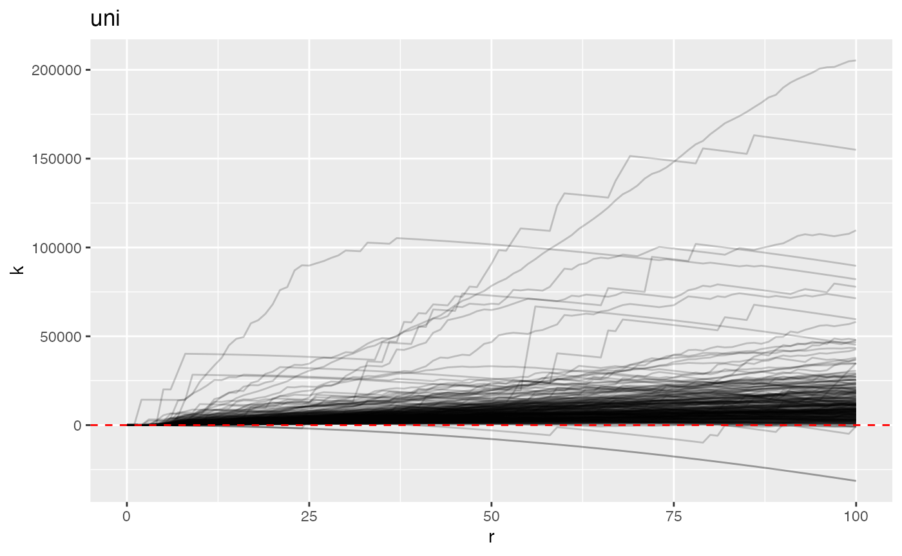
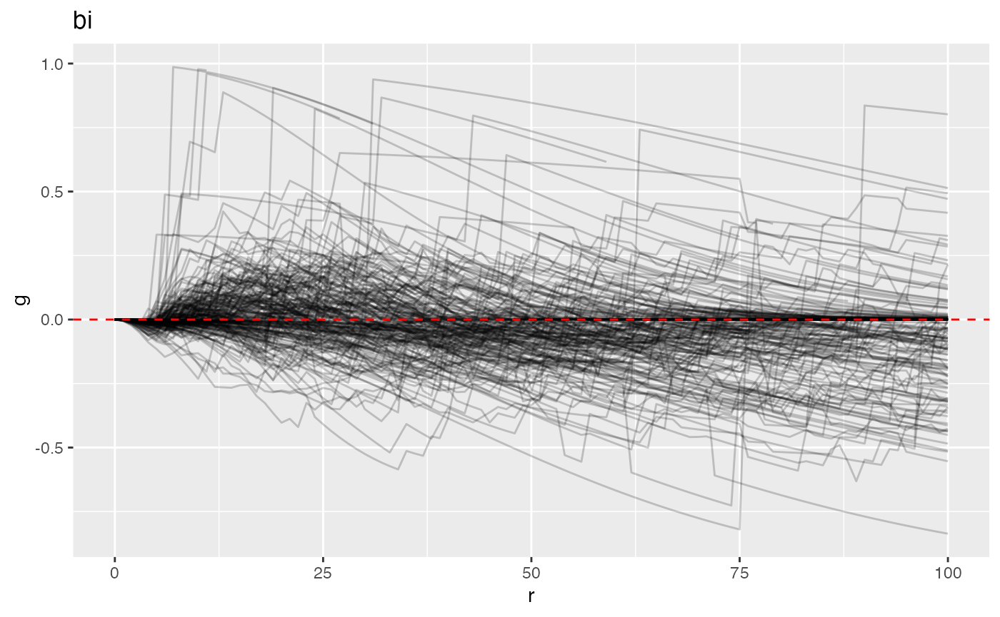
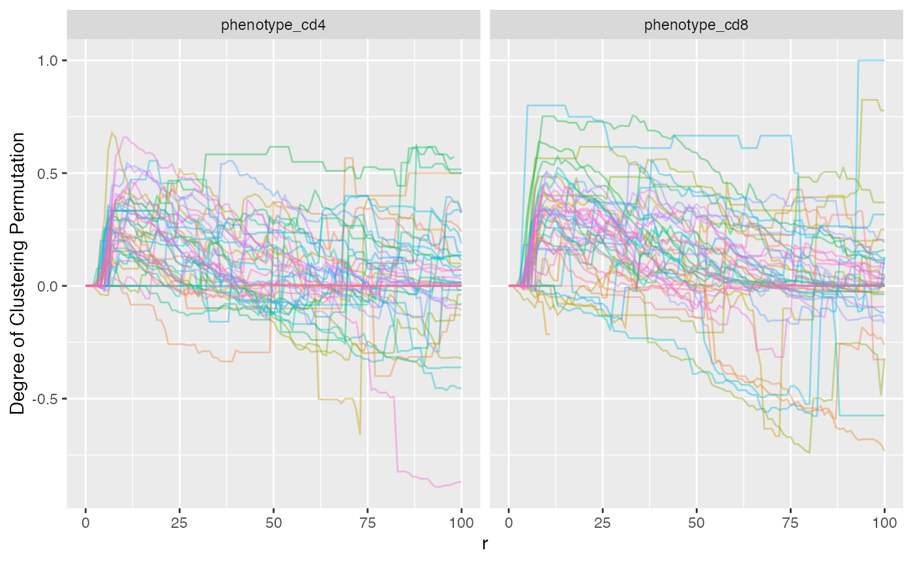
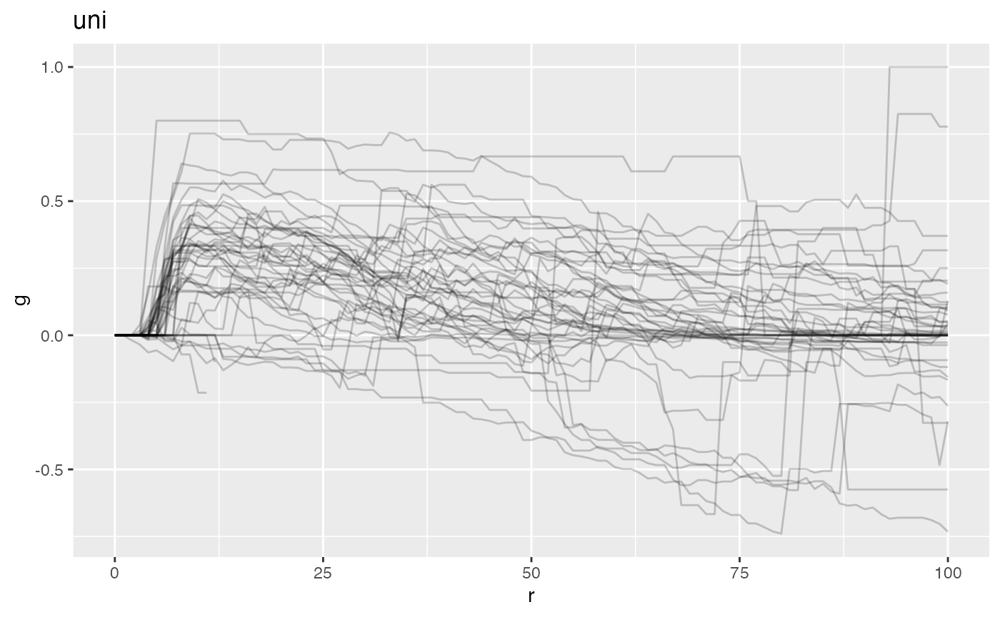

The mxfda package contains tools for analyzing
single-cell multiplex imaging data using methods from functional data
analysis. Analyses for this package are executed and stored using an S4
object of class mxFDA. This vignette outlines how to set up
an mxFDA object from spatial single cell imaging data, how
to calculate spatial summary functions, and exploratory data analysis
and visualization of these spatial summary functions. Details on how to
perform downstream analysis and feature extraction using functional
principal components analysis can be found in the separate vignette
vignette("mx_fpca"). To perform functional regression on
spatial summary functions from multiplex imaging data, see the
vignette("mx_funreg") vignette.
VectraPolarisData
Examples in this package use data adapted from the VectraPolarisData package on Bioconductor’s ExperimentHub. This package contains data from two multiplex imaging experiments conducted at the University of Colorado Anschutz Medical Campus. A shortcourse on single-cell multiplex imaging using these data is available here.
Data has been preprocessed and stored directly in the
mxfda package. Available datasets are
ovarian_FDA and lung_df. This vignette will
focus on the lung_df dataset, which contains a subset of 50
subjects from a multiplex imaging study of non-small cell lung carcinoma
described in Johnson et al. (2021). Each
subject has 4-5 multiplex images, which come from different regions of
interest (ROIs) in the tumor. Each ROI will be considered a “sample”
when constructing the mxfda object. We load the lung cancer
data below.
data(lung_df)Setting up the mxFDA object
The central object used with the mxfda package is the
mxFDA object. These objects are created with
make_mxfda() and hold everything from the raw spatial data
to fit functional data models using derived spatial summary functions.
To save space on large samples, the metadata is kept separately from the
spatial data and when needed, is exported and merged together. Slots in
the mxFDA object are designated as follows:
-
Metadata- stores sample specific traits that may be used as covariates when fitting models -
Spatial- a data frame of cell level information (x and y spatial coordinates, phenotype, etc.) that can be used to calculate spatial summary functions -
subject_key- a character string for the column in the metadata that denotes the unique subject id -
sample_key- a character string for the column in the metadata that denotes the unique sample id. Note that there may be multiple samples per subject, and this id links the metadata and spatial data for each multiplex image sample -
univariate_summariesandbivariate_summaries- lists of spatial summary functions either imported withadd_summary_function()or calculated withextract_summary_functions() -
functional_pca- list of results from functional principle component analysis -
functional_mpca- list of results from multilevel functional principle component analysis -
functional_cox- list of functional cox models that have been fit -
functional_mcox- list of functional mixed cox models that have been fit
Make mxFDAobject
Using the ?lung_df in the mxfda package,
columns with repeated data pertaining to the sample-level information
are extracted and stored in a data frame called clinical
while the cell-level information is kept in a long data frame
(make_mxfda() also accepts cell-level information as a list
of data). The spatial parameter in the make_mxfda()
function can be left blank if using a spatial metric derived from
external functions. The final 2 parameters for the ?lung_df
mxFDA object are the subject_key and the
sample_key. The sample_key is a column name
that appears both in the metadata and spatial
and denotes unique samples while the subject_key is a
column name in metadata that ties the samples to metadata;
if the data contains one sample per subject then sample_key
and subject_key is a 1:1, but if multiple samples per
subject, subject_id will be repeated.
clinical = lung_df %>%
select(image_id, patient_id, patientImage_id, gender, age, survival_days, survival_status, stage) %>%
distinct()
spatial = lung_df %>%
select(-image_id, -gender, -age, -survival_days, -survival_status, -stage)
mxFDAobject = make_mxfda(metadata = clinical,
spatial = spatial,
subject_key = "patient_id",
sample_key = "patientImage_id")Note that the object created has class mxFDA.
class(mxFDAobject)
#> [1] "mxFDA"
#> attr(,"package")
#> [1] "mxfda"Spatial summary functions based on point processes
The mxfda package provides methods for analyzing spatial
relationships between cell types in multiplex imaging data based on
point process theory. The location of cells in multiplex image samples
are treated as following a point process, realizations of a point
process are called “point patterns”, and point process models seek to
understand correlations in the spatial distributions of cells. Under the
assumption that the rate of a cell is constant over an entire region of
interest a point pattern will exhibit complete spatial randomness (CSR),
and it is often of interest to model whether cells deviate from CSR
either through clustering or repulsion. Spatial summary statistics can
be calculated to quantify the clustering and co-occurrence of cells in a
circular region with a particular radius r. Typically
univariate (one cell type) or bivariate (two cell types) summary
statistics are reported, and inference is obtained by comparing the
observed spatial summary statistic to that obtained under CSR. A popular
quantity is Ripley’s K(r), which studies the number of neighbors to a
particular point within radius r, and has univariate and
bivariate implementations in the spatstat package (Baddeley, Rubak, and Turner (2015)). Ripley’s K
is characterized by clustering or repulsion depending on whether it is
above or below the theoretical value of \(\pi
r^2\). Other spatial summary statistics analyze the distance to a
neighbor, and can be interpreted as probabilities of observing a
particular cell type within a radius r. One of these metrics,
G(r), or the nearest neighbor distance distribution, is the
cumulative distribution function of an exponential random variable. More
detailed overviews of spatial summary functions for multiplex imaging
data are provided in C. M. Wilson et al.
(2021) and Wrobel, Harris, and Vandekar
(2023).
Univariate summary functions
Below we calculate univariate Ripley’s K to summarize the spatial
relationship among immune cells in each image. The mxfda
package accomplishes this with the function
extract_summary_functions(). Either univariate or bivariate
can be calculated with this function depending on the choice supplied to
the extract_func argument. To calculate a univariate
spatial summary we supply extract_univariate to the
extract_func argument. The summary function that is
calculated depends on the function supplied to summary_fun
which is one of Kest(), Gest(), or
Lest() from the spatstat.explore package
(Kcross(), Gcross(), or Lcross()
for bivariate methods). Other options include supplying a vector of
radius values through r_vec, and the a specific edge
correction (see Baddeley, Rubak, and Turner
(2015)). We calculate the K function across a range of radii from
0 to 100 and use the isotropic (“iso”) edge correction.
mxFDAobject = extract_summary_functions(mxFDAobject,
extract_func = extract_univariate,
summary_func = Kest,
r_vec = seq(0, 100, by = 1),
edge_correction = "iso",
markvar = "immune",
mark1 = "immune")Running this code will calculate univariate Ripley’s K function to
measure spatial clustering of immune cells for each sample, and will
store these spatial summary functions in the
univariate_summaries slot of the mxFDAobject.
To access this slot and view the extracted summary functions, type:
mxFDAobject@univariate_summaries$Kest
#> # A tibble: 24,847 × 5
#> patientImage_id r sumfun csr fundiff
#> <chr> <dbl> <dbl> <dbl> <dbl>
#> 1 2_1 0 0 0 0
#> 2 2_1 1 0 3.14 -3.14
#> 3 2_1 2 0 12.6 -12.6
#> 4 2_1 3 0 28.3 -28.3
#> 5 2_1 4 0 50.3 -50.3
#> 6 2_1 5 0 78.5 -78.5
#> 7 2_1 6 0 113. -113.
#> 8 2_1 7 0 154. -154.
#> 9 2_1 8 0 201. -201.
#> 10 2_1 9 0 254. -254.
#> # ℹ 24,837 more rowsNote that the summaries are returned as a dataframe. The variable
sumfun is the estimated summary function value,
csr is the theoretical value under complete spatial
randomness, and fundiff =
sumfun-csr; in downstream analysis we will use
the fundiff covariate.
Plotting the mxFDA object
mxfda has S4 methods for visualization implemented via
the plot() function (see ?plot.mxFDA for
details). The first argument is the mxFDA object followed
by a few options that depend on what plot output is desired. Here, the
we want to plot the univariate summary that we just calculated, which
was the K function. By passing in what = 'uni k', the plot
function will extract the univariate K results. We also need to tell
plot() what column is the y-axis which can be
'sumfun' for the observed value, 'csr' for the
theoretical value of complete spatial randomness (CSR), or
'fundiff' which is the difference between the observed K
measure and the theoretical CSR. The output of plot() is a
ggplot2 object which can then be easily added
to/manipulated as any ggplot plot would.
NOTE: These are the columns when calculating using the
extract_summary_function() of mxfda but if
summary data is added from elsewhere with
add_summary_function() then those column names will have to
be used.
plot(mxFDAobject, y = "fundiff", what = "uni k") +
geom_hline(yintercept = 0, color = "red", linetype = 2)
#> Warning: Removed 48 rows containing missing values (`geom_line()`).
Bivariate summary functions
The extract_summary_function() function can also be used
to extract bivariate summaries comparing spatial clustering of 2 cell
types. We will look at relationship between T-cells and macrophages.
There are a few images that have fewer than 5 T-cells or macrophages,
which makes estimation of spatial summary functions less stable for
those images. To look at T-cells and macrophages, the data phenotypes
and cell locations have to be in long format so we first create a
variable with the cell types ('phenotype') from the
lung_df.
lung_df = lung_df %>%
mutate(phenotype = case_when(phenotype_cd8 == "CD8+" ~ "T-cell",
phenotype_cd14 == "CD14+" ~ "macrophage",
TRUE ~ "other"),
phenotype = factor(phenotype))We then recreate the mxFDAobject
spatial = lung_df %>%
select(-image_id, -gender, -age, -survival_days, -survival_status, -stage)
mxFDAobject = make_mxfda(metadata = clinical,
spatial = spatial,
subject_key = "patient_id",
sample_key = "patientImage_id")Now we calculate the bivariate G function, but can replace
Gcross() with Lcross() or
Kcross() to estimate the L or K bivariate functions
instead. The argument markvar takes the variable that we
created above called 'phenotype', and the 2 cell types that
we are interested in calculating the bivariate G for are
'T-cell' and 'macrophage' so we provide them
to mark1 and mark2, respectively.
mxFDAobject = extract_summary_functions(mxFDAobject,
summary_func = Gcross,
extract_func = extract_bivariate,
r_vec = seq(0, 100, by = 1),
edge_correction = "rs",
markvar = "phenotype",
mark1 = "T-cell",
mark2 = "macrophage")Plotting the bivariate G
Just like with the univariate plots, we can use the
plot() function to plot our mxFDA object
results. The what now is 'bi g',
'bivar g', or 'bivariate g'.
plot(mxFDAobject, y = "fundiff", what = "bi g") +
geom_hline(yintercept = 0, color = "red", linetype = 2)
#> Warning: Removed 1365 rows containing missing values (`geom_line()`).
Exploring the S4 object
Another useful function is ?summary.mxFDA which feeds
into the summary() method. Either typing the name of the
object or wrapping it in the summary function will provide information
like the number of subjects, samples, if spatial summary functions have
been calculated, and functional data analyses that have been run.
mxFDAobject
#> mxFDA Object:
#> Subjects: 50
#> Samples: 247
#> Has spatial data
#> Univariate Summaries: None
#> Bivariate Summaries: Gcross
#> FPCs not yet calculated
#> MFPCs not yet calculated
#> FCMs not yet calculated
#> MFCMs not yet calculatedSpatialTIME
Sometimes other summary functions or normalizations are run outside of the mxfda package but the end goal is to still run functional data analysis. Other packages, such as spatialTIME (Creed et al. (2021)) provide methods for fast calculation of functions in spatstat with permutation estimates of complete spatial randomness that is more robust than the theoretical, especially when tissue samples have holes that violate the assumption of a homogeneous point pattern (see C. Wilson et al. (2022)). Lets look at how to perform the estimation of univariate nearest neighbor G with spatialTIME.
The central object of spatialTIME is the
mIF object, that contains a list of spatial data frames, a
data frame of sample-level summaries, and a data frame for the metadata
(‘clinical’). From creating the mxFDA object, we have a
spatial data frame and the clinical data, now we have to convert them
into something that works with spatialTIME. The steps below
will be:
- convert positive/negative to 1/0 integers
- identify which columns in the spatial data frame are cell types
- convert spatial data frame to a list, where each element is a unique sample
- create a summary data frame from the spatial list for the number and proportion of positive cells for each phenotype
#Step 1
spatialTIME_spatial_df = spatial %>%
select(-X.1, -X, -phenotype) %>%
mutate(across(phenotype_ck:phenotype_cd4, ~ ifelse(grepl("\\+", .x), 1, 0))) %>%
relocate(patientImage_id, .before = 1)
#Step 2
cell_types = colnames(spatialTIME_spatial_df) %>% grep("phenotype", ., value = TRUE)
#Step 3
spatial_list = split(spatialTIME_spatial_df, spatial$patientImage_id)
#Step 4
summary_data = lapply(spatial_list, function(df){
df %>%
#group by sample ID to maintain ID column
group_by(patient_id, patientImage_id) %>%
#find number of positive
reframe(across(!!cell_types, ~ sum(.x)),
`Total Cells` = n()) %>%
#calculate proportion
mutate(across(!!cell_types, ~.x/`Total Cells` * 100, .names = "{.col} %"))
}) %>%
#bind the rows together
do.call(bind_rows, .)With the spatial list, clinical, and summary data the
mIF object can be constructed. For best computation
efficiency, use >v1.3.4.
library(spatialTIME)
#> spatialTIME version:
#> 1.3.4.1
#> If using for publication, please cite our manuscript:
#> https://doi.org/10.1093/bioinformatics/btab757
#make mif
mif = create_mif(clinical_data = clinical,
sample_data = summary_data,
spatial_list = spatial_list[1:50],
patient_id = "patient_id",
sample_id = "patientImage_id")Deriving spatial metrics with the mIF object is really
easy but does take some time. Will only do 10 permutations here to
estimate the complete spatial randomness measure of nearest neighbor G
and a reduced sampling, or 'rs', edge correction. To make
the run faster, will look at only cytotoxic T cells (CD8+) and helper T
cells (CD4+).
mif = NN_G(mif, mnames = cell_types[c(2, 6)],
r_range = 0:100, num_permutations = 10,
edge_correction = "rs", keep_perm_dis = FALSE,
workers = 1, overwrite = TRUE, xloc = "x", yloc = "y")With spatialTIME, all cell types (markers) are added to
the data frame. We can visualize both CD8+ and CD4+ with ggplot.
mif$derived$univariate_NN %>%
ggplot() +
geom_line(aes(x = r, y = `Degree of Clustering Permutation`, color = patientImage_id), alpha = 0.4) +
facet_grid(~Marker) +
theme(legend.position = "none")
#> Warning: Removed 1086 rows containing missing values (`geom_line()`).
Exporting the spatial summary function data from the mIF
object is the same as accessing the list object. However, we need to
make sure that the data that we use with the mxFDA object
contains only a single cell types results. This is to make sure that
when modeling we aren’t mixing up different cells. Below is the
extraction and filtering of the new univariate G results and keeping
only the cytotoxic T cell results
With the derived univariate nearest neighbor G for CD8+, it can be
added to an mxFDA object with
add_summary_function(). To show this, first will create a
new mxFDA object with an empty spatial slot then add the
new summary function results.
#make mxFDA object
mxFDA_spatialTIME = make_mxfda(metadata = clinical,
spatial = NULL,
subject_key = "patient_id",
sample_key = "patientImage_id")
#add summary data
mxFDA_spatialTIME = add_summary_function(mxFDAobject,
summary_function_data = uni_g,
metric = "uni g")Can now use the mxfda plot method with the new data and
continue with analyses as would be done if using the internal
extract_summary_function().
plot(mxFDA_spatialTIME, y = "Degree of Clustering Permutation", what = "uni g")
#> Warning: Removed 480 rows containing missing values (`geom_line()`).